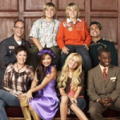
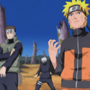
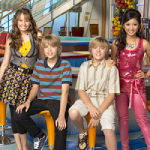
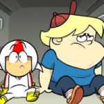
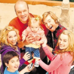
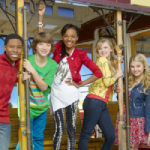
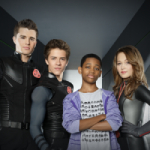
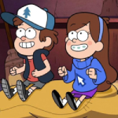
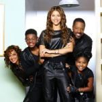

If you've heard pretty much any of my songs, or follow me on Instagram, or know me in real life, then you probably know that I like Disney Channel. Not as much as Nickelodeon or Cartoon Network, but I still think the channel was pretty cool. Anyways, I will dedicate this blog post to some of my favorite Disney Channel shows and Disney XD shows so that the list will be a bit longer.
Special thanks to the Disney Channel Broadcast Archives Fandom Page for their list of every show that aired on Disney Channel ever.

The Suite Life of Zack & Cody (2005)
I think this show is entertaining and stuff. I call the gear shift thingy in cars the PRNDL because of this show.
ignore this lol

Naruto: Shippuden (2007) Disney XD, originally on TV Tokyo
I definitely did NOT watch this show on Disney XD. To be honest this should be in the Cartoon Network list, not this one.
ignore this lol

Wizards of Waverly Place (2007)
This is one of my favorite TV shows ever, I actually didn't care much for Disney Channel at all until I watched this show. Basically, when I was in 10th grade I used to post images of like gothic stuff a lot (don't ask why, I was a huge Destroy Lonely fan back then). Anyways, in one of my posts (this one), I wanted to include a picture of a girl dressed as a vampire or whatever, then I remembered this Wizards book that my sister had a long time ago (she still has it) and I included that in the post. Just seeing the cover for it brought back so many memories of me chilling in my sister's room and looking at all of the books she had in her room, and thinking all of the Disney Channel ones were stupid (except for the Phineas & Ferb stuff). So, not very long after that I decided to watch Wizards of Waverly Place, and I thought it was so good that I dropped almost all of my Disney Channel hate from elementary school. Why did I hate Disney Channel so much when I was in elementary school? It's because I thought it was a stupid TV channel for girls. I was wrong, mostly.
ignore this lol

The Suite Life on Deck (2008)
For some reason, when I was a toddler I found Glee significantly more entertaining than this show. I like Suite Life on Deck now though.
ignore this lol

Kick Buttowski: Suburban Daredevil (2010) Disney XD
This show is very entertaining.
ignore this lol

Good Luck Charlie (2010)
One of my earliest memories is seeing promotional posters for this show at an airport. Also, this is one of the only shows on Disney Channel that I didn't hate while new episodes were still being produced.
ignore this lol

A.N.T. Farm (2011)
This is another show that I didn't hate while new episodes were being produced. The episode where Zendaya's character tried to kill Chyna scared me.
ignore this lol

Lab Rats (2012) Disney XD
This show is very funny.
ignore this lol

Gravity Falls (2012)
I used to be obsessed with this show back when it was still in production, then I forgot about it for almost 10 years. After I rewatched the show about 2 years ago, I still think it's very good. Gravity Falls is one of my favorite TV shows ever.
ignore this lol

K.C. Undercover (2015)
I saw the premiere for this show (mainly because I had a huge crush on Zendaya) and I thought it was good, then I forgot about it for 10 years. After rewatching this show last year, it's one of my favorite TV shows ever.
This is the end of this list.